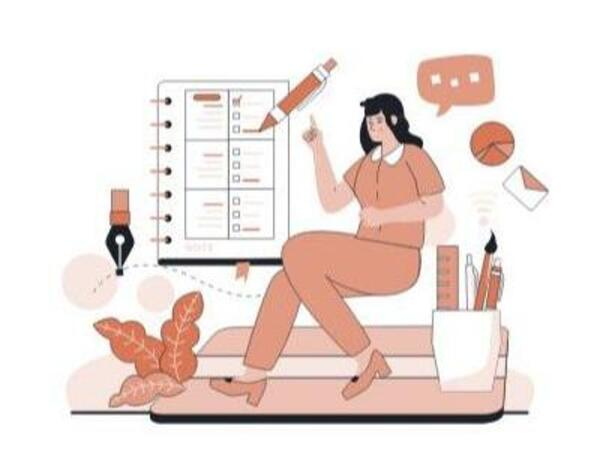

<section id="l34-09" style="background:#F4F5F7;color:#25282D;font-family:'Noto Sans KR', Arial, sans-serif;padding:88px 106px 106px;display:flex;flex-direction:column;gap:20px">
<p style="font-size:26px;font-weight:700;letter-spacing:6px;color:#C4613F">셋째 습관: 샘플</p>
<h2 style="font-family:'Noto Serif KR', Georgia, serif;font-size:68px;font-weight:700;line-height:1.2;color:#25282D">작은 샘플로 먼저 시험한다</h2>
<x-connector x1="576" y1="488" x2="742" y2="488" head="end" style="color:#6B7280;border-width:2px"></x-connector>
<x-connector x1="1174" y1="488" x2="1324" y2="500" head="end" style="color:#6B7280;border-width:2px"></x-connector>
<x-connector x1="960" y1="714" x2="960" y2="614" head="end" style="color:#6B7280;border-width:2px;border-style:dashed"></x-connector>
<x-connector x1="1328" y1="560" x2="1178" y2="824" head="end" style="color:#6B7280;border-width:2px"></x-connector>
<x-connector x1="1174" y1="840" x2="1382" y2="846" head="end" style="color:#6B7280;border-width:2px"></x-connector>
<div style="position:absolute;left:148px;top:366px;width:428px;height:244px;display:flex;align-items:center;gap:22px;background:#FFFFFF;border:1px solid #E4E6EA;border-radius:12px;box-shadow:0 4px 16px rgba(30,35,45,0.07);padding:0 26px">
<div style="width:64px;height:64px;flex:none;display:flex;align-items:center;justify-content:center;border:2px solid #D97757;border-radius:50%;background:#FBF1EC"><x-icon name="Search" style="color:#D97757;width:28px;height:28px"></x-icon></div>
<div style="display:flex;flex-direction:column;gap:6px"><h3 style="font-family:'Noto Serif KR', Georgia, serif;font-size:30px;font-weight:700;color:#25282D">샘플 채팅 50개</h3><p style="font-size:24px;line-height:1.4;color:#5F6670">다양한 유형</p></div>
</div>
<div style="position:absolute;left:746px;top:366px;width:428px;height:244px;display:flex;align-items:center;gap:22px;background:#FFFFFF;border:1px solid #E4E6EA;border-radius:12px;box-shadow:0 4px 16px rgba(30,35,45,0.07);padding:0 26px">
<div style="width:64px;height:64px;flex:none;display:flex;align-items:center;justify-content:center;border:2px solid #D97757;border-radius:50%;background:#FBF1EC"><x-icon name="Database" style="color:#D97757;width:28px;height:28px"></x-icon></div>
<div style="display:flex;flex-direction:column;gap:6px"><h3 style="font-family:'Noto Serif KR', Georgia, serif;font-size:30px;font-weight:700;color:#25282D">작은 배치</h3><p style="font-size:24px;line-height:1.4;color:#5F6670">프롬프트 실행</p></div>
</div>
<div style="position:absolute;left:1328px;top:310px;width:458px;height:378px;display:flex;flex-direction:column;align-items:center;justify-content:center;gap:10px;background:#FFFFFF;border:1px solid #E4E6EA;border-radius:12px;box-shadow:0 4px 16px rgba(30,35,45,0.07);padding:18px">

<h3 style="font-family:'Noto Serif KR', Georgia, serif;font-size:30px;font-weight:700;color:#25282D;text-align:center">사람</h3>
<p style="font-size:24px;line-height:1.4;color:#5F6670;text-align:center">결과를 읽음</p>
</div>
<div style="position:absolute;left:746px;top:714px;width:428px;height:220px;display:flex;align-items:center;gap:22px;background:#FFFFFF;border:1px solid #E4E6EA;border-radius:12px;box-shadow:0 4px 16px rgba(30,35,45,0.07);padding:0 26px">
<div style="width:64px;height:64px;flex:none;display:flex;align-items:center;justify-content:center;border:2px solid #D97757;border-radius:50%;background:#FBF1EC"><x-icon name="Wrench" style="color:#D97757;width:28px;height:28px"></x-icon></div>
<div style="display:flex;flex-direction:column;gap:6px"><h3 style="font-family:'Noto Serif KR', Georgia, serif;font-size:30px;font-weight:700;color:#25282D">고치고 다시 실행</h3><p style="font-size:24px;line-height:1.4;color:#5F6670">프롬프트, 스키마, 검사</p></div>
</div>
<div style="position:absolute;left:1386px;top:758px;width:400px;height:176px;display:flex;align-items:center;gap:22px;background:#1B1E24;border-radius:12px;padding:0 26px">
<div style="width:64px;height:64px;flex:none;display:flex;align-items:center;justify-content:center;border:2px solid #D97757;border-radius:50%"><x-icon name="Lightning" style="color:#F0B39E;width:28px;height:28px"></x-icon></div>
<div style="display:flex;flex-direction:column;gap:6px"><h3 style="font-family:'Noto Serif KR', Georgia, serif;font-size:30px;font-weight:700;color:#F4F5F7">전체 배치</h3><p style="font-size:24px;line-height:1.4;color:#C9CDD3">제대로 보일 때만</p></div>
</div>
<aside>원문 제목: Test a small sample first (THIRD HABIT: THE SAMPLE). 50 sample chats (Different kinds) → Small batch (Run the prompt) → A person (Reads the results) → Fix and rerun (Prompt, schema, checks) ⇢ Small batch(다시 실행) / Fix and rerun → Full batch (Only when it looks right).</aside>
</section>
